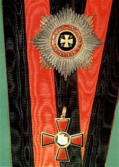
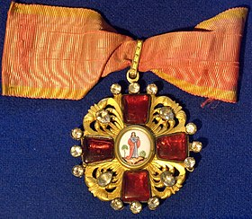
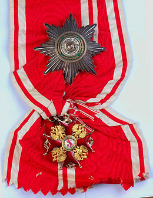
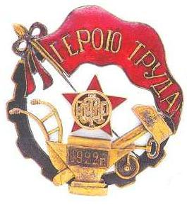
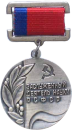

Награды и звания Василия Ивановича Разумовского:
| Название награды | Ссылка | Изображение |
|---|---|---|
| Орден Святого Владимира четвёртой степени | Подробнее об ордене Святого Владимира четвёртой степени на Wikipedia--> |
 |
| Орден Святой Анны третьей и второй степени | Подробнее об ордене Святой Анны третьей и второй степени на Wikipedia--> |
 |
| Орден Святого Станислава второй степени | Подробнее об ордене Святого Станислава второй степени на Wikipedia--> |
 |
| Звание Героя Труда | Подробнее о звании Героя Труда РСФСР степени на Wikipedia--> |
 |
| Звание заслуженного деятеля науки РСФСР | Подробнее о звании заслуженного деятеля науки РСФСР на Wikipedia--> |
 |